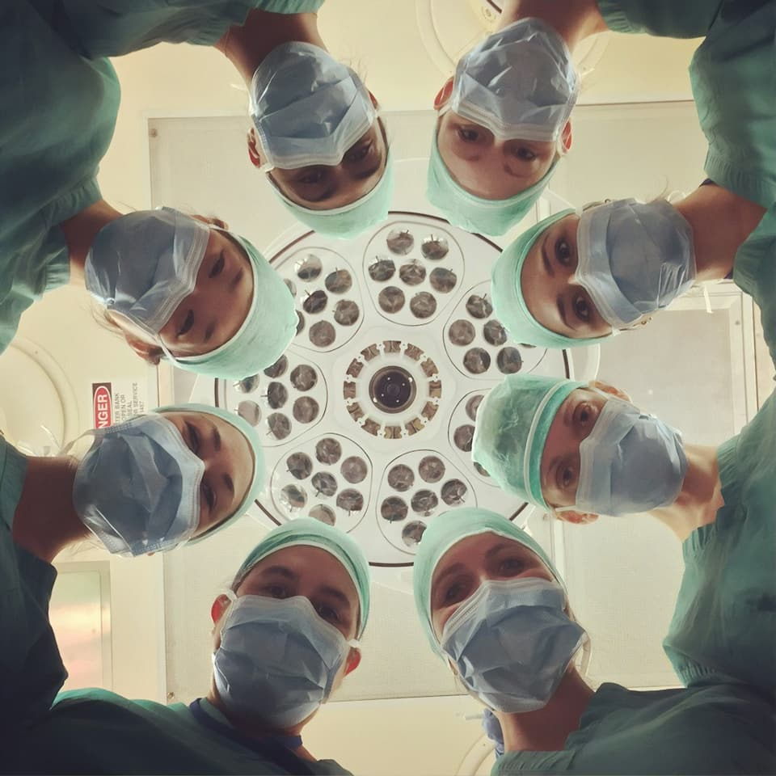

Treatment guidance
Medical Treatments
We assist international patients in exploring major specialties and complex procedures through responsible hospital coordination.


We assist international patients in exploring major specialties and complex procedures through responsible hospital coordination.
